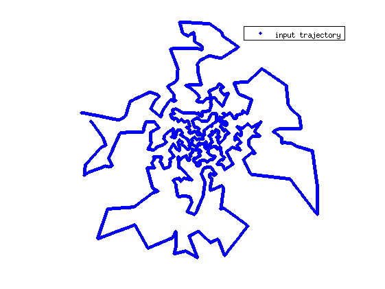
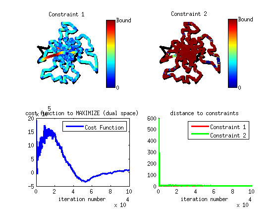
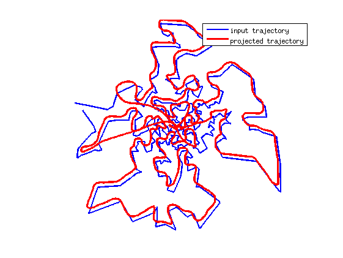

Script example curve projection
This document shows how to use the algorithm of trajectory projection to design feasible gradient waveforms.
Contents
Enter the Gradient constraints
close all clear all clc
Parameters of the scanner (here used in [Lustig et al, IEEE TMI 2008])
Gmax = 40e-3; % T/m Smax = 150e-3; % T/m/ms Kmax = 600; % m^-1 gamma = 42.576*1e3; % kHz/T alpha = gamma*Gmax; % in m^-1 ms^-1 beta = gamma*Smax; % in m^-1 ms^-2 Dt = .004; % sampling time in ms
Choose an input trajectory for the algorithm
Give an input trajectory
load citiesTSPexample x=pts*Kmax; s0=parameterize_maximum_speed(x,.4*alpha,Dt)'; % w1 = 14.7*2*pi*Gmax; % w2 = 8.7/1.02*2*pi*Gmax; % T = .17/Gmax; % t = 0e-3:Dt:T; % C = Kmax*sin(w1*t').*exp(1i*w2*t'); % x=[real(C)';imag(C)']; % s0=parameterize_maximum_speed(x,.9*alpha,Dt)'; figure, plot(s0(1:end,1),s0(1:end,2),'b.','linewidth',2) axis equal, axis off set(gcf,'Color',[1 1 1]) legend('input trajectory')
Specify constraints
dt=Dt; % discretisation step; % define kinematic constraints C_kine=set_MRI_constraints_RV(alpha,beta,dt); % Rotation Variant Constraints %C_kine=set_MRI_constraints_RIV(alpha,beta,dt); % Rotation Invariant Constraints % and affine constraints %C_linear=set_Linear_constraints(size(s0,1),size(s0,2),'start_point',[0 0]); C_linear=set_Linear_constraints(size(s0,1),size(s0,2),'start_point',[0 0],'end_point',[0 0],'gradient_moment_nulling',1,'curve_splitting',1400); % Algorithm parameters Algo_param.nit = 100000; % number of iterations Algo_param.L=16; % Lipschitz constant of the gradient Algo_param.discretization_step=dt; % optional parameters (default 0) Algo_param.show_progression = 0; % 0 = no progression , can be really slow Algo_param.display_results = 1;
Project curve with Rotation-Invariant Constraints
tic s1=Project_Curve_Affine_Constraints(s0,C_kine,C_linear,Algo_param); toc
---------------------- Constraint verifications: Value of constraint 1: 6.8982 (Bound: 6.8122) Value of constraint 2: 0.13604 (Bound: 0.10218) ---------------------- ---------------------- Elapsed time is 399.873498 seconds.
Display the output trajectory
figure, plot(s0(:,1),s0(:,2),'b','linewidth',2) hold on, plot(s1(:,1),s1(:,2),'r','linewidth',3) axis equal, axis off set(gcf,'Color',[1 1 1]) legend('input trajectory', 'projected trajectory')